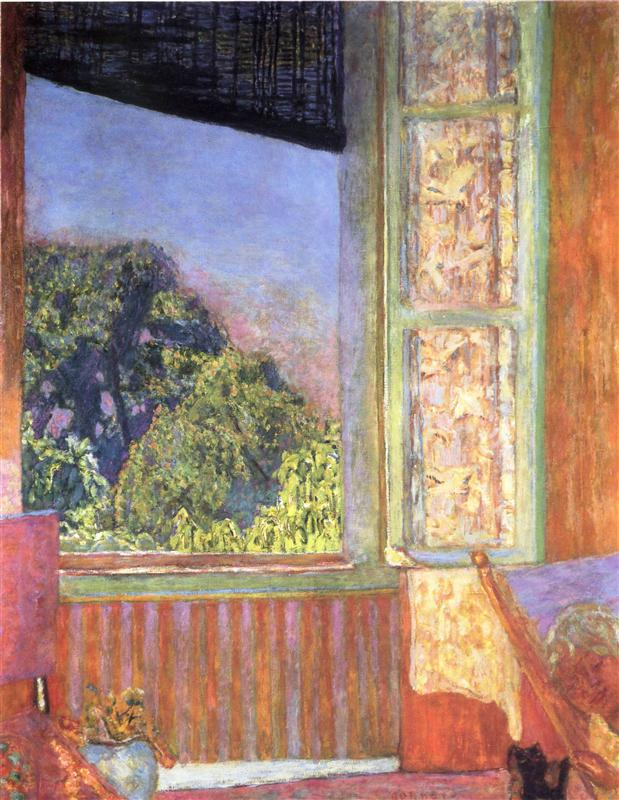

Obrazy, życie i inspiracje artysty
| Tytuł | Rok | Miniatura |
|---|---|---|
| Naiad and the Fisherman | 1910 | |
| The Bathroom | 1925 | |
| The Open Window | 1921 |  |
Tekst w kolorze niebieskim (sky-500)
Tekst w kolorze czerwonym (red-500)
Tekst w kolorze zielonym (green-500)
Ten element ma zastosowany efekt cienia (shadow-lg).
Animacja Ping